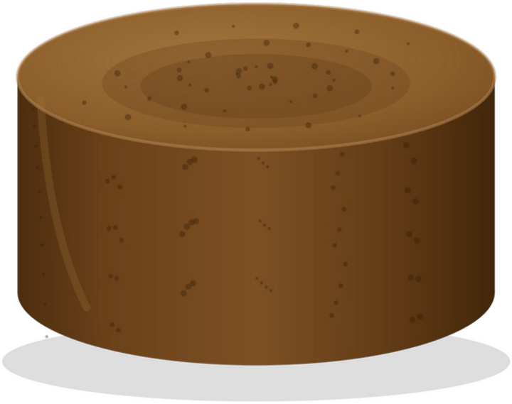
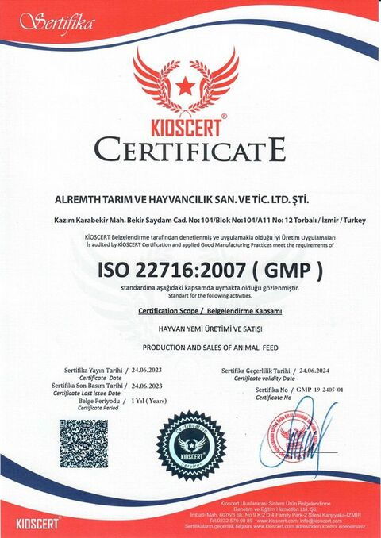
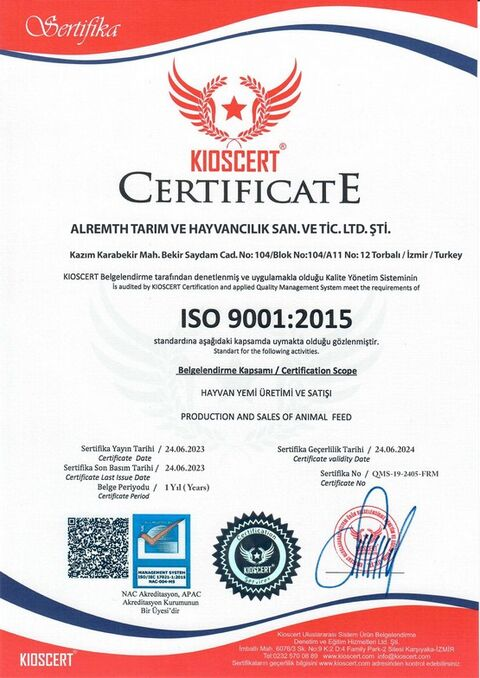
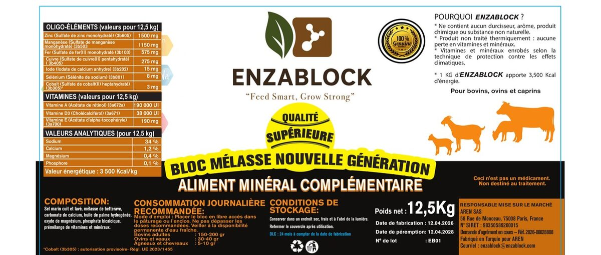

Soğuk proses üretim
Isıl işlem yok: vitamin ve mineral aktivitesi üretim sırasında korunur.
ENZABLOCK; sığır, koyun ve keçiler için geliştirilmiş, soğuk proses ile üretilen 12,5 kg premium tamamlayıcı mineral yemdir. Her değeri AB katkı numaralarıyla beyan edilmiş, analiz sertifikasıyla doğrulanabilir bir formül.

Sığır, koyun ve keçiler için geliştirilmiş tamamlayıcı mineral yem. Melas ve bitkisel yağ matrisi; vitamin ve mineral premiksleri ile güçlendirilmiş, dayanıklı ve iştah açıcı blok yapısı. Pişirilmiş ve yıkanmış deniz tuzu ile şeker pancarı melası kullanılır.
Kategori: tamamlayıcı mineral yem | GTİP: 2309.90.96.90.19 | AB TARIC: 2309 90 96 96
Isıl işlem yok: vitamin ve mineral aktivitesi üretim sırasında korunur.
Vitamin ve mineraller iklim etkilerine karşı kaplanarak korunur.
Renklendirici, koruyucu, aroma ve sertleştirici madde içermez.
Blok sertliği aşırı tüketimi engeller; hayvan ihtiyacı kadar yalar.
Mera ve padok koşullarına uygun; 70–75 °C'ye kadar formunu korur.
Her yalamada aynı besin profili; blok içinde ayrışma olmaz.
Tüm vitamin ve mineraller AB katkı maddesi tanımlama numaralarıyla beyan edilir. Değerler analiz sertifikası (COA) ile birebir doğrulanabilir.
| Bileşen | Oran | İşlev | AB No. |
|---|---|---|---|
| Tuz (NaCl) | %34 | Temel mineral kaynağı | 11.4.1 |
| Melas tozu | %10 | Enerji ve lezzet | 4.1.1 |
| Kalsiyum karbonat | %1,2 | Kalsiyum desteği | 11.1.1 |
| Bitkisel yağ (palm) | %0,6 | Ekstra enerji | 2.20.1 |
| Magnezyum oksit | %0,4 | Rumen sağlığı | 11.2.1 |
| Dikalsiyum fosfat | %0,1 | Fosfor desteği | 11.3.2 |
Yüksek enerjili matris; kış beslemesi ve verim dönemlerinde ek destek.
Sodyum ~%13,4 · Kalsiyum ~%0,50 · Fosfor ~%0,02 · Magnezyum ~%0,24 · Demir 575 mg/kg
Makro mineral değerleri bileşimden hesaplanmıştır; analiz değeri değildir.
| Vitamin | Miktar | AB No. |
|---|---|---|
| Vitamin A | 190.000 IU | 3a672a |
| Vitamin D3 | 38.000 IU | 3a671 |
| Vitamin E | 190 mg | 3a700 |
| Mineral | Kaynak | Miktar | AB No. |
|---|---|---|---|
| Çinko | sülfat | 1.500 mg | 3b605 |
| Manganez | sülfat | 1.150 mg | 3b503 |
| Demir | sülfat | 575 mg | 3b103 |
| Bakır | sülfat | 275 mg | 3b405 |
| İyot | kalsiyum iyodat | 15 mg | 3b202 |
| Selenyum | sodyum selenit | 8 mg | 3b801 |
| Kobalt | sülfat | 3 mg | 3b305* |
* Kobalt (3b305): AB Tüzüğü 2023/1455 kapsamında yetkilendirilmiş formda kullanılır.
Referans hayvan: merada emziren, 600 kg canlı ağırlıkta et ineği (günlük ~12,5 kg kuru madde). İhtiyaçlar NASEM (2016) Et Sığırı Besin İhtiyaçları'na göre hesaplanmıştır. 150 g, serbest mineral takviyelerinde optimum kabul edilen 100–150 g/gün aralığının üst sınırıdır.
Katkı (%) = bloğun kg başına değeri × 0,15 kg ÷ günlük ihtiyaç × 100. Kaba yemden gelen kısım düşülmemiştir; %100'ü aşan değerler ihtiyacın üzerindedir.
Şekerleri rumen mikroplarına hızlı fermente olan besin sağlar, kaba yemin sindirimini destekler; lezzeti sayesinde düzenli tüketim sağlar.
Yağda çözünen A, D3 ve E vitaminlerinin emilimine yardımcı olur ve ekstra enerji sağlar.
Kaynak: NASEM (2016) Nutrient Requirements of Beef Cattle, 8. baskı (Merck Veterinary Manual özeti). ENZABLOCK değerleri üretim analiz sertifikasından (COA) alınmıştır. Hesaplar sığır içindir.
Mineral açığı sessiz verim kaybıdır: iz mineral ve vitamin eksikliği süt verimi, döl verimi ve bağışıklıkta ölçülebilir kayıp yaratır.
Faydalar; formüldeki enerji, vitamin ve iz mineral desteğinin beklenen zooteknik sonuçlarıdır. Bölgenizde saha denemesiyle birlikte doğrularız.
Serbest yalama ile hayvan ihtiyacını kendisi karşılar. Günlük yemleme iş yükü ve doz hatası ortadan kalkar.
| Hayvan | Günlük tüketim | Yerleşim |
|---|---|---|
| Sığır | 400–500 g/gün | Ahır / mera |
| Koyun & keçi | 300–400 g/gün | Ağıl / mera |
Değerler teknik dokümandaki ortalama serbest tüketim aralıklarıdır. Genç hayvanlar için ülke etiketindeki önerilere uyulur.
Üretim; İzmir Torbalı'daki tesisimizde, ISO 9001 ve GMP çerçevesinde yapılır. Etiketten lot takibine kadar AB mevzuatına uygun bir dokümantasyon sunuyoruz.
Kalite Yönetim Sistemi — hayvan yemi üretimi ve satışı kapsamında.
Sertifika No: QMS-19-2405-FRMİyi Üretim Uygulamaları — üretim tesisi süreç güvencesi.
Sertifika No: GMP-19-2405-01

Analiz sertifikası (COA), MSDS ve güncel belge kopyaları talep üzerine dosya halinde paylaşılır.

ENZABLOCK; ruminant beslenmesi için yeni nesil, melas bazlı vitamin ve mineral yalama blokları üreten, Avrupa'ya odaklı bir hayvan besleme markasıdır. Türkiye'deki üretim gücünü Avrupa'daki depo ve pazar operasyonlarıyla birleştirir.
Ürünlerimiz İzmir Torbalı'daki üretim tesisinde, soğuk proses teknolojisiyle ve ISO/GMP çerçevesinde üretilir; Macaristan'daki AB depomuzdan Avrupa'ya ulaşır.
Fiyat kırarak değil; kalite, dokümantasyon ve saha kanıtıyla satıyoruz. Distribütörlerimizle uzun vadeli ortaklıklar kuruyoruz.
Ruminantların günlük vitamin ve mineral ihtiyacını en pratik ve en güvenilir biçimde karşılamak. Bunu yaparken çiftçiye ölçülebilir verim, distribütöre sürdürülebilir kazanç sağlamak.
ENZABLOCK'u Avrupa'da güvenilir, teknik olarak güçlü ve premium algıya sahip bir hayvan besleme markasına dönüştürmek.
Her iddiamız analiz sertifikası, ISO/GMP belgeleri ve AB katkı numaralarıyla kanıtlanabilir.
Bileşim, değerler ve belgeler açıktır; distribütör ve çiftçi ne aldığını bilir.
Tek seferlik satış değil; bölgesinde büyüyen distribütörlerle kalıcı iş birliği.
Kararlarımızı gerçek saha sonuçları yönlendirir; saha denemesi iş modelimizin parçasıdır.
Üretim tesisi: Alremth Tarım ve Hayvancılık San. ve Tic. Ltd. Şti. — Torbalı / İzmir.
İthalat, depolama, satış ve AB içi dağıtım merkezi; distribütöre hızlı teslimat.
Fransa pazarına arz sorumlusu; ENZABLOCK Fransa'da aktif satışta.
Fransa'daki saha referansları hazır. Erken katılan distribütörler bölge hakkı ve referans avantajını ilk alır.
AREN SAS (Paris) ile yerel temsil, Le Havre üzerinden konteyner tedariki ve saha referansları.
Enza Trade KFT ile yerinde depo ve hızlı teslimat; NÉBIH kayıt süreci yürütülüyor. Distribütör ağı şimdi kuruluyor.
Almanya, Hollanda, Polonya ve Romanya; Fransa ve Macaristan referanslarıyla açılacak.
Orta Avrupa için doğrudan TIR sevkiyatı; ilk etap planı 2 TIR.
Fransa ve Batı Avrupa için 40' HC konteyner sevkiyatı.
Macaristan merkezli stok; kısa termin ve küçük partilerle esneklik.
EUR.1 dolaşım belgesiyle sevkiyat; gümrük ve kontrol maliyetleri fiyatlamaya dahil edilir.
Amacımız yalnızca ürün satmak değil; distribütörlerimizle birlikte kalıcı bir kategori inşa etmek. Ruminant işletmeleri bu ürünü zaten arıyor. Doğru kanala girildiğinde talep yaratmak gerekmiyor, mevcut talebi yakalamak yeterli.
Distribütörlük başvurusuFiyatlama %20–35 distribütör kâr payını koruyacak şekilde yapılır; premium ama satılabilir segment.
Analiz sertifikalı bileşim; tüm vitamin ve mineraller AB katkı numaralarıyla belgeli.
TDS, MSDS, analiz sertifikası, ISO & GMP belgeleri ve çok dilli etiket taslakları teslime hazır.
Ücretsiz numune, saha denemesi, pazarlama desteği ve performansa bağlı bölge koruması.
Hedef: bölgeyi test etmek
Hedef: kanal ağını büyütmek
Bölge münhasırlığında öncelik
Kademe eşikleri ve koşullar bağlayıcı değildir; hedef bölge ve kanal yapısına göre görüşmede birlikte netleştirilir.
Ücretsiz numune + seçilmiş pilot çiftliklerde 30 günlük saha denemesi; küçük ilk sipariş.
Net fiyat listesi, düzenli sipariş döngüsü, pazarlama ve teknik destek paketi.
Performansa bağlı bölge münhasırlığı; yıllık hedef ve ortak pazarlama planı.
Blok yerleşimi; sürü ve başlangıç kayıtları alınır.
Tüketim ve hayvan kabulü yerinde doğrulanır.
Çiftçi geri bildirimi ve tüketim verisi kaydedilir.
Sonuç raporu; sipariş ve bölge planı netleştirilir.
Deneme protokolü, kayıt formları ve raporlama şablonu tarafımızdan sağlanır.
TDS, MSDS, analiz sertifikası (COA) ve içerik beyanları; satış klasörü hazır.
EN / HU / FR etiket taslakları; ülke mevzuatına göre uyarlanır.
İlk sipariş öncesi ücretsiz numune; pilot çiftlik deneme protokolü.
Teknik sorularda uzman desteği; kritik müşterilerde ortak ziyaret.
Katalog, ürün föyü, sunum ve dijital içerikler; yerel dilde.
Sipariş, doküman ve bayi yönetimi tek merkezde toplanıyor.
İlk sipariş öncesi deneme paketi bizden; karar vermeden önce test edin.
Palet bazında başlangıç; ilk günden hacim taahhüdü istenmez.
Macaristan stoklarından kısa terminli sevkiyat.
Satış argümanları, teknik eğitim ve ilk müşteri ziyaretlerinde destek.
Sığır (süt ve besi), koyun ve keçiler için geliştirilmiş tamamlayıcı mineral yemdir. Ahırda, ağılda ve merada serbest yalama ile kullanılır.
Teknik dokümana göre ortalama serbest tüketim sığırda 400–500 g/gün, koyun ve keçide 300–400 g/gün aralığındadır. Tüketim ilk hafta gözlemlenmeli, sürü başına blok sayısı buna göre ayarlanmalıdır. Genç hayvanlar için ülke etiketindeki önerilere uyulur.
ENZABLOCK bir tuz bloğu değil, melas bazlı bir vitamin-mineral bloğudur. Tuz oranı %34'tür (sodyum ~%13,4), yani tipik tuz bloklarının (%37–38 sodyum) yaklaşık üçte biri kadar sodyum içerir. Buna karşılık yüksek A ve D3 vitamini, dengeli iz mineraller, %10 melas ve %0,6 bitkisel yağ içerir.
Renklendirici, koruyucu, aroma ve sertleştirici madde içermez. Formüldeki tüm vitamin ve mineraller AB katkı maddesi numaralarıyla beyan edilmiştir (EC 1831/2003).
Blok mera ve padok koşullarına uygundur ve 70–75 °C'ye kadar formunu korur. Yine de en iyi sonuç için doğrudan güneş ışığından ve yağıştan korunan bir yerde sunulması önerilir.
Raf ömrü 2 yıldır. Serin, kuru ve doğrudan güneş almayan bir ortamda, ambalajında saklanmalıdır.
Teknik veri föyü (TDS), güvenlik bilgi formu (MSDS), analiz sertifikası (COA), üretim tesisinin ISO 9001:2015 ve GMP (ISO 22716:2007) sertifikaları ve EN/HU/FR etiket taslakları. Belgeler talep üzerine dosya halinde paylaşılır.
Fransa'da AREN SAS (Paris) üzerinden satıştadır. Macaristan'da distribütör ağı Enza Trade KFT üzerinden kurulmaktadır. Bölgenizdeki satış noktası için bizimle iletişime geçin.
Üç aşamalı bir model uyguluyoruz: ücretsiz numune ve 30 günlük saha denemesiyle başlıyoruz, ardından net fiyat listesiyle distribütörlüğe geçiyoruz, performansa bağlı olarak da bölge münhasırlığı sunuyoruz. İlk günden hacim taahhüdü istemiyoruz. İletişim formundan başvurabilirsiniz.
Net distribütör fiyat listesi görüşmede paylaşılır. Fiyatlama, distribütörün %20–35 kâr payını koruyacak şekilde yapılır; önerilen satış fiyatı ülke ve kanala göre birlikte netleştirilir. Hacim arttıkça kademeli iskonto uygulanır.
Orta Avrupa'ya İzmir'den Budapeşte'ye karayoluyla, Fransa ve Batı Avrupa'ya Aliağa'dan Le Havre'a deniz yoluyla sevkiyat yapılır. Distribütörlere Macaristan'daki AB depomuzdan kısa termin ve küçük partilerle teslimat yapılır.